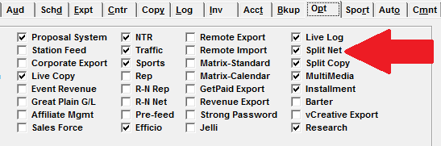
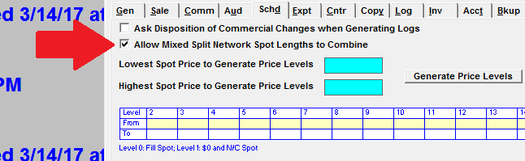
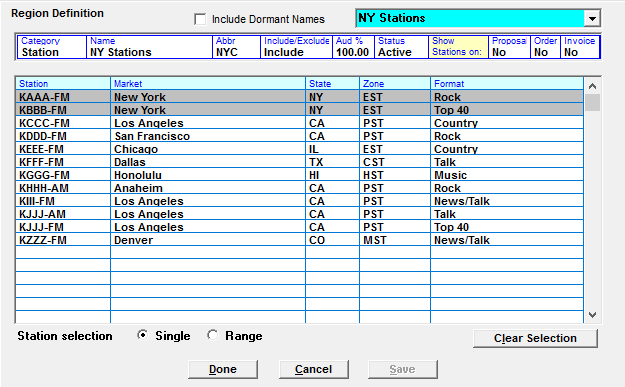
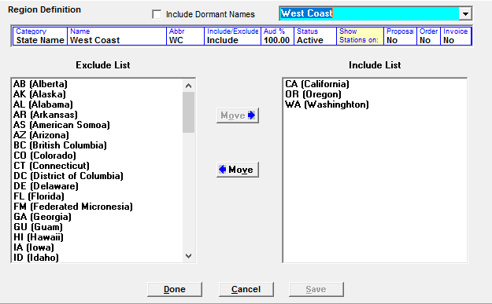

Split Network Setup
Site Options
In Traffic Site Options, on the Options tab, check on the “Split Net” option (you will need a keycode from Counterpoint).

On the Traffic Site Options Schedule tab, the setting “Allow mixed split network spot lengths to combine” can be checked on. When checked on, network split spots with a different spot length can be combined in the same avail (assuming the stations are not in conflict).

When the “Allow mixed split network spot lengths to combine” option is checked on, the system will create fills for the unsold split network in the appropriate length (as long as it is defined on the Split Fill screen).
Split Network Regions
Split Network regions can be defined on the Lists -> Split Net screen, or on the Proposal/Orders screen in the Region field on the Override box. Both screens are the same. (Note: Split Network Regions are different from Split Copy Regions, which are defined on the Copy Screen and are used for Split Copy where the same advertiser purchases a single spot on a vehicle but airs different copy in different regions on that vehicle.)
Below is an example of Split Network Region.

The split network region definition screen is divided into two parts. The top part is used to define general information about the region, and the bottom part is used to define the criteria that makes up the region. This section explains each field on the Split Network Region Definition screen.
- Category: split network regions can be defined by format, market, state, station, and time zone.
- Name: the name of the split region.
- Abbr: an abbreviated name for the split region that is shown on the Spots screen.
- Include/Exclude: when “include” is selected, the criteria selected in the lower part of the screen will get the split network spot using this region. When “exclude” is selected, the criteria selected in the lower part of the screen will be excluded, and the other criteria will get the split network spot.
- Aud %: used in the research computations as an adjustment value of the audience. For example, if set to 75% and the audience value is 200, then 150 is used.
- Status: can be active or dormant.
- Show stations on Proposal/Order/Invoice: select Yes or No to make the list of stations appear on the Proposal, Order, or Invoice.
The criteria that makes up a region is selected in the lower half of the screen. Categories can be moved from the exclude or include list by selecting them and pressing the Move button.

In the example above, the category “State” is selected, and the states California, Oregon, and Washington are included. This means any station in one of those three states will get the split network copy when this region is used.
When the category is defined as “Station”, then the individual stations to include are selected and shown highlighted in gray.
You can create a new region by selecting “new” from the dropdown in the upper right corner. You can also model from an existing region by selecting “model” from the dropdown in the upper right corner and then selecting the region to model from. (New regions can also be created from scratch by choosing not to model from an existing region.)